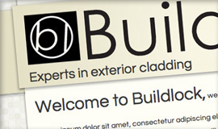

Hi, my name is Andy Carson
I am a web designer and frontend developer living in Melbourne, Australia.
I work with Photoshop, HTML, CSS, SCSS, JavaScript and Git, I have also recently begun dabbling in rails.
I strive to make all my code clean, compliant and accessible. I have a strong drive to work hard and to constantly improve my skills which I do through equal parts curiosity, tenacity and hair pulling!
- photoshop: 10/10 - baller
- design: 6/10 - fair
- html/css: 9/10 - rockin'
- jquery/javascript: 5/10 - getting there
- rails: 2/10 - enthusiastic noob
Recent Work

Young Achiever Award
website design and development

The Australian Boat Race
website design and development

Staff Homepage
website design and development

Why Melbourne
website design and development
UoM Academic Procession
wire framing and front end development
Buildlock
website design and development
UoM Change of Preference
content management
MSI
content management

MSI Landing Page
website design and development